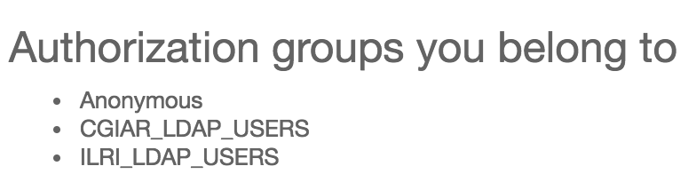
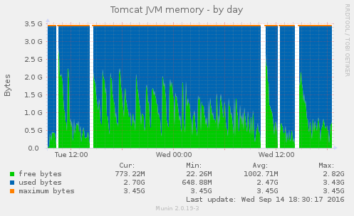
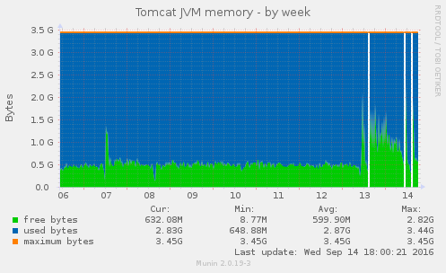
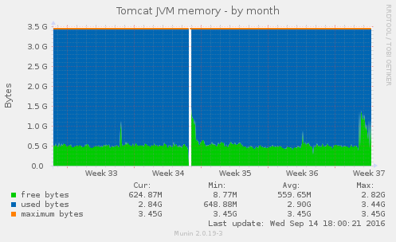
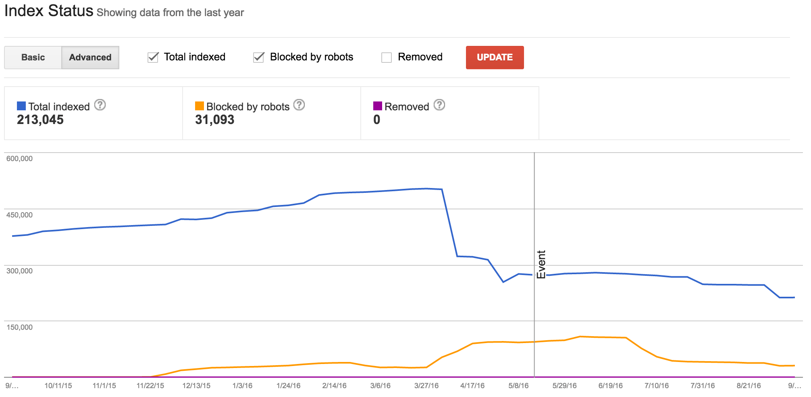

September, 2016
2016-09-01
- Discuss helping CCAFS with some batch tagging of ORCID IDs for their authors
- Discuss how the migration of CGIAR’s Active Directory to a flat structure will break our LDAP groups in DSpace
- We had been using
DC=ILRIto determine whether a user was ILRI or not - It looks like we might be able to use OUs now, instead of DCs:
$ ldapsearch -x -H ldaps://svcgroot2.cgiarad.org:3269/ -b "dc=cgiarad,dc=org" -D "admigration1@cgiarad.org" -W "(sAMAccountName=admigration1)"
- User who has been migrated to the root vs user still in the hierarchical structure:
distinguishedName: CN=Last\, First (ILRI),OU=ILRI Kenya Employees,OU=ILRI Kenya,OU=ILRIHUB,DC=CGIARAD,DC=ORG
distinguishedName: CN=Last\, First (ILRI),OU=ILRI Ethiopia Employees,OU=ILRI Ethiopia,DC=ILRI,DC=CGIARAD,DC=ORG
- Changing the DSpace LDAP config to use
OU=ILRIHUBseems to work:

- Notes for local PostgreSQL database recreation from production snapshot:
$ dropdb dspacetest
$ createdb -O dspacetest --encoding=UNICODE dspacetest
$ psql dspacetest -c 'alter user dspacetest createuser;'
$ pg_restore -O -U dspacetest -d dspacetest ~/Downloads/cgspace_2016-09-01.backup
$ psql dspacetest -c 'alter user dspacetest nocreateuser;'
$ psql -U dspacetest -f ~/src/git/DSpace/dspace/etc/postgres/update-sequences.sql dspacetest -h localhost
$ vacuumdb dspacetest
- Some names that I thought I fixed in July seem not to be:
dspacetest=# select distinct text_value, authority, confidence from metadatavalue where metadata_field_id=3 and resource_type_id=2 and text_value like 'Poole, %';
text_value | authority | confidence
-----------------------+--------------------------------------+------------
Poole, Elizabeth Jane | b6efa27f-8829-4b92-80fe-bc63e03e3ccb | 600
Poole, Elizabeth Jane | 41628f42-fc38-4b38-b473-93aec9196326 | 600
Poole, Elizabeth Jane | 83b82da0-f652-4ebc-babc-591af1697919 | 600
Poole, Elizabeth Jane | c3a22456-8d6a-41f9-bba0-de51ef564d45 | 600
Poole, E.J. | c3a22456-8d6a-41f9-bba0-de51ef564d45 | 600
Poole, E.J. | 0fbd91b9-1b71-4504-8828-e26885bf8b84 | 600
(6 rows)
- At least a few of these actually have the correct ORCID, but I will unify the authority to be c3a22456-8d6a-41f9-bba0-de51ef564d45
dspacetest=# update metadatavalue set authority='c3a22456-8d6a-41f9-bba0-de51ef564d45', confidence=600 where metadata_field_id=3 and resource_type_id=2 and text_value like 'Poole, %';
UPDATE 69
- And for Peter Ballantyne:
dspacetest=# select distinct text_value, authority, confidence from metadatavalue where metadata_field_id=3 and resource_type_id=2 and text_value like 'Ballantyne, %';
text_value | authority | confidence
-------------------+--------------------------------------+------------
Ballantyne, Peter | 2dcbcc7b-47b0-4fd7-bef9-39d554494081 | 600
Ballantyne, Peter | 4f04ca06-9a76-4206-bd9c-917ca75d278e | 600
Ballantyne, P.G. | 4f04ca06-9a76-4206-bd9c-917ca75d278e | 600
Ballantyne, Peter | ba5f205b-b78b-43e5-8e80-0c9a1e1ad2ca | 600
Ballantyne, Peter | 20f21160-414c-4ecf-89ca-5f2cb64e75c1 | 600
(5 rows)
- Again, a few have the correct ORCID, but there should only be one authority…
dspacetest=# update metadatavalue set authority='4f04ca06-9a76-4206-bd9c-917ca75d278e', confidence=600 where metadata_field_id=3 and resource_type_id=2 and text_value like 'Ballantyne, %';
UPDATE 58
- And for me:
dspacetest=# select distinct text_value, authority, confidence from metadatavalue where metadata_field_id=3 and resource_type_id=2 and text_value like 'Orth, A%';
text_value | authority | confidence
------------+--------------------------------------+------------
Orth, Alan | 4884def0-4d7e-4256-9dd4-018cd60a5871 | 600
Orth, A. | 4884def0-4d7e-4256-9dd4-018cd60a5871 | 600
Orth, A. | 1a1943a0-3f87-402f-9afe-e52fb46a513e | 600
(3 rows)
dspacetest=# update metadatavalue set authority='1a1943a0-3f87-402f-9afe-e52fb46a513e', confidence=600 where metadata_field_id=3 and resource_type_id=2 and text_value like 'Orth, %';
UPDATE 11
- And for CCAFS author Bruce Campbell that I had discussed with CCAFS earlier this week:
dspacetest=# update metadatavalue set authority='0e414b4c-4671-4a23-b570-6077aca647d8', confidence=600 where metadata_field_id=3 and resource_type_id=2 and text_value like 'Campbell, B%';
UPDATE 166
dspacetest=# select distinct text_value, authority, confidence from metadatavalue where metadata_field_id=3 and resource_type_id=2 and text_value like 'Campbell, B%';
text_value | authority | confidence
------------------------+--------------------------------------+------------
Campbell, Bruce | 0e414b4c-4671-4a23-b570-6077aca647d8 | 600
Campbell, Bruce Morgan | 0e414b4c-4671-4a23-b570-6077aca647d8 | 600
Campbell, B. | 0e414b4c-4671-4a23-b570-6077aca647d8 | 600
Campbell, B.M. | 0e414b4c-4671-4a23-b570-6077aca647d8 | 600
(4 rows)
- After updating the Authority indexes (
bin/dspace index-authority) everything looks good - Run authority updates on CGSpace
2016-09-05
- After one week of logging TLS connections on CGSpace:
# zgrep "DES-CBC3" /var/log/nginx/cgspace.cgiar.org-access-ssl.log* | wc -l
217
# zcat -f -- /var/log/nginx/cgspace.cgiar.org-access-ssl.log* | wc -l
1164376
# zgrep "DES-CBC3" /var/log/nginx/cgspace.cgiar.org-access-ssl.log* | awk '{print $6}' | sort | uniq
TLSv1/DES-CBC3-SHA
TLSv1/EDH-RSA-DES-CBC3-SHA
- So this represents
0.02%of 1.16M connections over a one-week period - Transforming some filenames in OpenRefine so they can have a useful description for SAFBuilder:
value + "__description:" + cells["dc.type"].value
- This gives you, for example:
Mainstreaming gender in agricultural R&D.pdf__description:Brief
2016-09-06
- Trying to import the records for CIAT from yesterday, but having filename encoding issues from their zip file
- Create a zip on Mac OS X from a SAF bundle containing only one record with one PDF:
- Filename: Complementing Farmers Genetic Knowledge Farmer Breeding Workshop in Turipaná, Colombia.pdf
- Imports fine on DSpace running on Mac OS X
- Fails to import on DSpace running on Linux with error
No such file or directory
- Change diacritic in file name from á to a and re-create SAF bundle and zip
- Success on both Mac OS X and Linux…
- Looks like on the Mac OS X file system the file names represent á as: a (U+0061) + ́ (U+0301)
- See: http://www.fileformat.info/info/unicode/char/e1/index.htm
- See: http://demo.icu-project.org/icu-bin/nbrowser?t=%C3%A1&s=&uv=0
- If I unzip the original zip from CIAT on Windows, re-zip it with 7zip on Windows, and then unzip it on Linux directly, the file names seem to be proper UTF-8
- We should definitely clean filenames so they don’t use characters that are tricky to process in CSV and shell scripts, like:
,,', and"
value.replace("'","").replace(",","").replace('"','')
- I need to write a Python script to match that for renaming files in the file system
- When importing SAF bundles it seems you can specify the target collection on the command line using
-c 10568/4003or in thecollectionsfile inside each item in the bundle - Seems that the latter method causes a null pointer exception, so I will just have to use the former method
- In the end I was able to import the files after unzipping them ONLY on Linux
- The CSV file was giving file names in UTF-8, and unzipping the zip on Mac OS X and transferring it was converting the file names to Unicode equivalence like I saw above
- Import CIAT Gender Network records to CGSpace, first creating the SAF bundles as my user, then importing as the
tomcat7user, and deleting the bundle, for each collection’s items:
$ ./safbuilder.sh -c /home/aorth/ciat-gender-2016-09-06/66601.csv
$ JAVA_OPTS="-Dfile.encoding=UTF-8 -Xmx512m" /home/cgspace.cgiar.org/bin/dspace import -a -e aorth@mjanja.ch -c 10568/66601 -s /home/aorth/ciat-gender-2016-09-06/SimpleArchiveFormat -m 66601.map
$ rm -rf ~/ciat-gender-2016-09-06/SimpleArchiveFormat/
2016-09-07
- Erase and rebuild DSpace Test based on latest Ubuntu 16.04, PostgreSQL 9.5, and Java 8 stuff
- Reading about PostgreSQL maintenance and it seems manual vacuuming is only for certain workloads, such as heavy update/write loads
- I suggest we disable our nightly manual vacuum task, as we’re a mostly read workload, and I’d rather stick as close to the documentation as possible since we haven’t done any testing/observation of PostgreSQL
- See: https://www.postgresql.org/docs/9.3/static/routine-vacuuming.html
- CGSpace went down and the error seems to be the same as always (lately):
2016-09-07 11:39:23,162 ERROR org.dspace.storage.rdbms.DatabaseManager @ SQL connection Error -
org.apache.commons.dbcp.SQLNestedException: Cannot get a connection, pool error Timeout waiting for idle object
...
- Since CGSpace had crashed I quickly deployed the new LDAP settings before restarting Tomcat
2016-09-13
- CGSpace crashed twice today, errors from
catalina.out:
org.apache.commons.dbcp.SQLNestedException: Cannot get a connection, pool error Timeout waiting for idle object
at org.apache.commons.dbcp.PoolingDataSource.getConnection(PoolingDataSource.java:114)
- I enabled logging of requests to
/restagain
2016-09-14
- CGSpace crashed again, errors from
catalina.out:
org.apache.commons.dbcp.SQLNestedException: Cannot get a connection, pool error Timeout waiting for idle object
at org.apache.commons.dbcp.PoolingDataSource.getConnection(PoolingDataSource.java:114)
- I restarted Tomcat and it was ok again
- CGSpace crashed a few hours later, errors from
catalina.out:
Exception in thread "http-bio-127.0.0.1-8081-exec-25" java.lang.OutOfMemoryError: Java heap space
at java.lang.StringCoding.decode(StringCoding.java:215)
- We haven’t seen that in quite a while…
- Indeed, in a month of logs it only occurs 15 times:
# grep -rsI "OutOfMemoryError" /var/log/tomcat7/catalina.* | wc -l
15
- I also see a bunch of errors from dspace.log:
2016-09-14 12:23:07,981 ERROR org.dspace.storage.rdbms.DatabaseManager @ SQL connection Error -
org.apache.commons.dbcp.SQLNestedException: Cannot get a connection, pool error Timeout waiting for idle object
- Looking at REST requests, it seems there is one IP hitting us nonstop:
# awk '{print $1}' /var/log/nginx/rest.log | sort -n | uniq -c | sort -h | tail -n 3
820 50.87.54.15
12872 70.32.99.142
25744 70.32.83.92
# awk '{print $1}' /var/log/nginx/rest.log.1 | sort -n | uniq -c | sort -h | tail -n 3
7966 181.118.144.29
54706 70.32.99.142
109412 70.32.83.92
- Those are the same IPs that were hitting us heavily in July, 2016 as well…
- I think the stability issues are definitely from REST
- Crashed AGAIN, errors from dspace.log:
2016-09-14 14:31:43,069 ERROR org.dspace.storage.rdbms.DatabaseManager @ SQL connection Error -
org.apache.commons.dbcp.SQLNestedException: Cannot get a connection, pool error Timeout waiting for idle object
- And more heap space errors:
# grep -rsI "OutOfMemoryError" /var/log/tomcat7/catalina.* | wc -l
19
- There are no more rest requests since the last crash, so maybe there are other things causing this.
- Hmm, I noticed a shitload of IPs from 180.76.0.0/16 are connecting to both CGSpace and DSpace Test (58 unique IPs concurrently!)
- They seem to be coming from Baidu, and so far during today alone account for 1⁄6 of every connection:
# grep -c ip_addr= /home/cgspace.cgiar.org/log/dspace.log.2016-09-14
29084
# grep -c ip_addr=180.76.15 /home/cgspace.cgiar.org/log/dspace.log.2016-09-14
5192
- Other recent days are the same… hmmm.
- From the activity control panel I can see 58 unique IPs hitting the site concurrently, which has GOT to hurt our stability
- A list of all 2000 unique IPs from CGSpace logs today:
# grep ip_addr= /home/cgspace.cgiar.org/log/dspace.log.2016-09-11 | awk -F: '{print $5}' | sort -n | uniq -c | sort -h | tail -n 100
- Looking at the top 20 IPs or so, most are Yahoo, MSN, Google, Baidu, TurnitIn (iParadigm), etc… do we have any real users?
- Generate a list of all author affiliations for Peter Ballantyne to go through, make corrections, and create a lookup list from:
dspacetest=# \copy (select text_value, count(*) from metadatavalue where resource_type_id=2 and metadata_field_id=211 group by text_value order by count desc) to /tmp/affiliations.csv with csv;
- Looking into the Catalina logs again around the time of the first crash, I see:
Wed Sep 14 09:47:27 UTC 2016 | Query:id: 78581 AND type:2
Wed Sep 14 09:47:28 UTC 2016 | Updating : 6/6 docs.
Commit
Commit done
dn:CN=Haman\, Magdalena (CIAT-CCAFS),OU=Standard,OU=Users,OU=HQ,OU=CIATHUB,dc=cgiarad,dc=org
Exception in thread "http-bio-127.0.0.1-8081-exec-193" java.lang.OutOfMemoryError: Java heap space
- And after that I see a bunch of “pool error Timeout waiting for idle object”
- Later, near the time of the next crash I see:
dn:CN=Haman\, Magdalena (CIAT-CCAFS),OU=Standard,OU=Users,OU=HQ,OU=CIATHUB,dc=cgiarad,dc=org
Wed Sep 14 11:29:55 UTC 2016 | Query:id: 79078 AND type:2
Wed Sep 14 11:30:20 UTC 2016 | Updating : 6/6 docs.
Commit
Commit done
Sep 14, 2016 11:32:22 AM com.sun.jersey.server.wadl.generators.WadlGeneratorJAXBGrammarGenerator buildModelAndSchemas
SEVERE: Failed to generate the schema for the JAX-B elements
com.sun.xml.bind.v2.runtime.IllegalAnnotationsException: 2 counts of IllegalAnnotationExceptions
java.util.Map is an interface, and JAXB can't handle interfaces.
this problem is related to the following location:
at java.util.Map
at public java.util.Map com.atmire.dspace.rest.common.Statlet.getRender()
at com.atmire.dspace.rest.common.Statlet
java.util.Map does not have a no-arg default constructor.
this problem is related to the following location:
at java.util.Map
at public java.util.Map com.atmire.dspace.rest.common.Statlet.getRender()
at com.atmire.dspace.rest.common.Statlet
- Then 20 minutes later another outOfMemoryError:
Exception in thread "http-bio-127.0.0.1-8081-exec-25" java.lang.OutOfMemoryError: Java heap space
at java.lang.StringCoding.decode(StringCoding.java:215)
- Perhaps these particular issues are memory issues, the munin graphs definitely show some weird purging/allocating behavior starting this week
  
- And really, we did reduce the memory of CGSpace in late 2015, so maybe we should just increase it again, now that our usage is higher and we are having memory errors in the logs
- Oh great, the configuration on the actual server is different than in configuration management!
- Seems we added a bunch of settings to the
/etc/default/tomcat7in December, 2015 and never updated our ansible repository:
JAVA_OPTS="-Djava.awt.headless=true -Xms3584m -Xmx3584m -XX:MaxPermSize=256m -XX:+UseConcMarkSweepGC -Dfile.encoding=UTF-8 -XX:-UseGCOverheadLimit -XX:MaxGCPauseMillis=250 -XX:GCTimeRatio=9 -XX:+PerfDisableSharedMem -XX:+ParallelRefProcEnabled -XX:G1HeapRegionSize=8m -XX:InitiatingHeapOccupancyPercent=75 -XX:+UseLargePages -XX:+AggressiveOpts"
- So I’m going to bump the heap +512m and remove all the other experimental shit (and update ansible!)
- Increased JVM heap to 4096m on CGSpace (linode01)
2016-09-15
- Looking at Google Webmaster Tools again, it seems the work I did on URL query parameters and blocking via the
X-Robots-TagHTTP header in March, 2016 seem to have had a positive effect on Google’s index for CGSpace

2016-09-16
- CGSpace crashed again, and there are TONS of heap space errors but the datestamps aren’t on those lines so I’m not sure if they were yesterday:
dn:CN=Orentlicher\, Natalie (CIAT),OU=Standard,OU=Users,OU=HQ,OU=CIATHUB,dc=cgiarad,dc=org
Thu Sep 15 18:45:25 UTC 2016 | Query:id: 55785 AND type:2
Thu Sep 15 18:45:26 UTC 2016 | Updating : 100/218 docs.
Thu Sep 15 18:45:26 UTC 2016 | Updating : 200/218 docs.
Thu Sep 15 18:45:27 UTC 2016 | Updating : 218/218 docs.
Commit
Commit done
Exception in thread "http-bio-127.0.0.1-8081-exec-247" java.lang.OutOfMemoryError: Java heap space
Exception in thread "http-bio-127.0.0.1-8081-exec-241" java.lang.OutOfMemoryError: Java heap space
Exception in thread "http-bio-127.0.0.1-8081-exec-243" java.lang.OutOfMemoryError: Java heap space
Exception in thread "http-bio-127.0.0.1-8081-exec-258" java.lang.OutOfMemoryError: Java heap space
Exception in thread "http-bio-127.0.0.1-8081-exec-268" java.lang.OutOfMemoryError: Java heap space
Exception in thread "http-bio-127.0.0.1-8081-exec-263" java.lang.OutOfMemoryError: Java heap space
Exception in thread "http-bio-127.0.0.1-8081-exec-280" java.lang.OutOfMemoryError: Java heap space
Exception in thread "Thread-54216" org.apache.solr.client.solrj.impl.HttpSolrServer$RemoteSolrException: Exception writing document id 7feaa95d-8e1f-4f45-80bb
-e14ef82ee224 to the index; possible analysis error.
at org.apache.solr.client.solrj.impl.HttpSolrServer.executeMethod(HttpSolrServer.java:552)
at org.apache.solr.client.solrj.impl.HttpSolrServer.request(HttpSolrServer.java:210)
at org.apache.solr.client.solrj.impl.HttpSolrServer.request(HttpSolrServer.java:206)
at org.apache.solr.client.solrj.request.AbstractUpdateRequest.process(AbstractUpdateRequest.java:124)
at org.apache.solr.client.solrj.SolrServer.add(SolrServer.java:116)
at org.apache.solr.client.solrj.SolrServer.add(SolrServer.java:102)
at com.atmire.statistics.SolrLogThread.run(SourceFile:25)
- I bumped the heap space from 4096m to 5120m to see if this is really about heap speace or not.
- Looking into some of these errors that I’ve seen this week but haven’t noticed before:
# zcat -f -- /var/log/tomcat7/catalina.* | grep -c 'Failed to generate the schema for the JAX-B elements'
113
- I’ve sent a message to Atmire about the Solr error to see if it’s related to their batch update module
2016-09-19
- Work on cleanups for author affiliations after Peter sent me his list of corrections/deletions:
$ ./fix-metadata-values.py -i affiliations_pb-322-corrections.csv -f cg.contributor.affiliation -t correct -m 211 -d dspace -u dspace -p fuuu
$ ./delete-metadata-values.py -f cg.contributor.affiliation -i affiliations_pb-2-deletions.csv -m 211 -u dspace-d dspace-p fuuu
- After that we need to take the top ~300 and make a controlled vocabulary for it
- I dumped a list of the top 300 affiliations from the database, sorted it alphabetically in OpenRefine, and created a controlled vocabulary for it (#267)